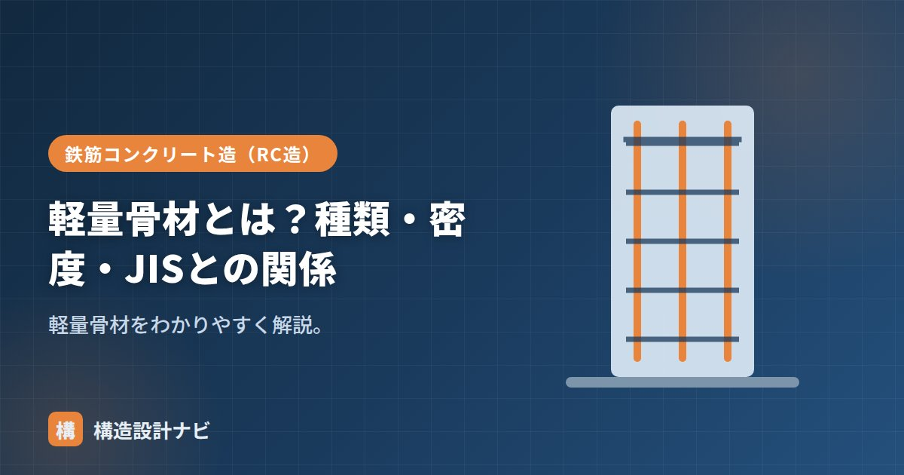

軽量骨材とは？種類・密度・JISとの関係

軽量骨材（けいりょうこつざい）とは、普通骨材（砂・砂利・砕石など）に比べて密度が小さく軽い骨材のことです。建物の自重を軽くしたい軽量コンクリートの材料として使われます。なお「軽量」という言葉は鉄骨の軽量形鋼にも使われますが、こちらはコンクリート用の骨材であり、鋼材とはまったく別の材料である点に注意してください。
- 軽量骨材は密度の小さい骨材。内部の空隙が多いため軽くなる。
- 人工・天然・副産の3種類があり、構造用には品質が安定した人工軽量骨材が多い。
- 吸水しやすいため、あらかじめ吸水させておくなど施工上の配慮が必要。
意味
普通骨材より密度が小さい骨材で、内部に細かな空隙を多く含むため軽くなります。これを使うとコンクリートの自重を減らせます。同じ体積でも重量が小さいということは、粒の内部に無数の気泡状の空間が抱え込まれているということでもあり、この空隙の量と分布が密度・強度・吸水率など骨材の性質を大きく左右します。
種類
| 種類 | 例 |
|---|---|
| 人工軽量骨材 | 膨張頁岩・膨張粘土などを焼成したもの |
| 天然軽量骨材 | 軽石・火山れきなど |
| 副産軽量骨材 | フライアッシュを焼成したものなど |
構造用には品質の安定した人工軽量骨材が多く使われます。
製造方法
人工軽量骨材は、頁岩（けつがん）や粘土などの原料を高温（おおむね1000℃を超える温度）で焼成してつくります。原料に含まれる成分がガスを発生させながら軟化・膨張することで、内部に無数の気泡が生じ、焼き上がった粒は表面が硬く緻密な殻に覆われつつ、内部は多孔質で軽いという構造になります。この「硬い外殻＋軽い内部」という構造が、軽量でありながら一定の強度を確保できる理由です。
単位体積重量と密度
軽量骨材は絶乾密度が2.0g/cm³未満程度と小さく、これを使った軽量コンクリートの単位容積質量は約1.4〜2.1t/m³になります（普通は約2.3）。軽いぶん、ヤング係数が小さく乾燥収縮が大きい傾向があります。
軽量骨材は空隙が多く吸水しやすいため、あらかじめ十分に吸水させて（プレウェッティング）使うなど、配合・施工で配慮が必要です。吸水量を見込まずに配合すると、練混ぜ後にコンクリートが硬くなりすぎたり、逆に骨材が水を吸って強度・耐久性が不安定になったりするため、事前の吸水管理が品質確保の要になります。
JISとの関係
構造用の軽量骨材はJIS A 5002（構造用軽量コンクリート骨材）などに規定されています。規格に適合した骨材を用い、密度・強度を確認して使います。天然軽量骨材や副産軽量骨材は品質のばらつきが大きいことがあるため、構造部材に使う場合は特に規格適合品かどうかの確認が重要です。
軽量骨材のプレウェッティングは生コン工場側の管理に委ねられがちですが、実際どこまで吸水させているかは工場によって差があります。特殊な調合を採用する際は、事前に吸水方法を工場へ確認しておくと後の品質トラブルを避けやすいです。
まとめ
- 軽量骨材は密度の小さい軽い骨材。人工・天然・副産がある。
- 人工軽量骨材は原料を高温焼成し、内部に空隙をつくって軽量化する。
- 絶乾密度2.0未満程度で、軽量コンクリート（約1.4〜2.1t/m³）に使う。
- 吸水しやすく、JIS A 5002などの規格に適合したものを使う。